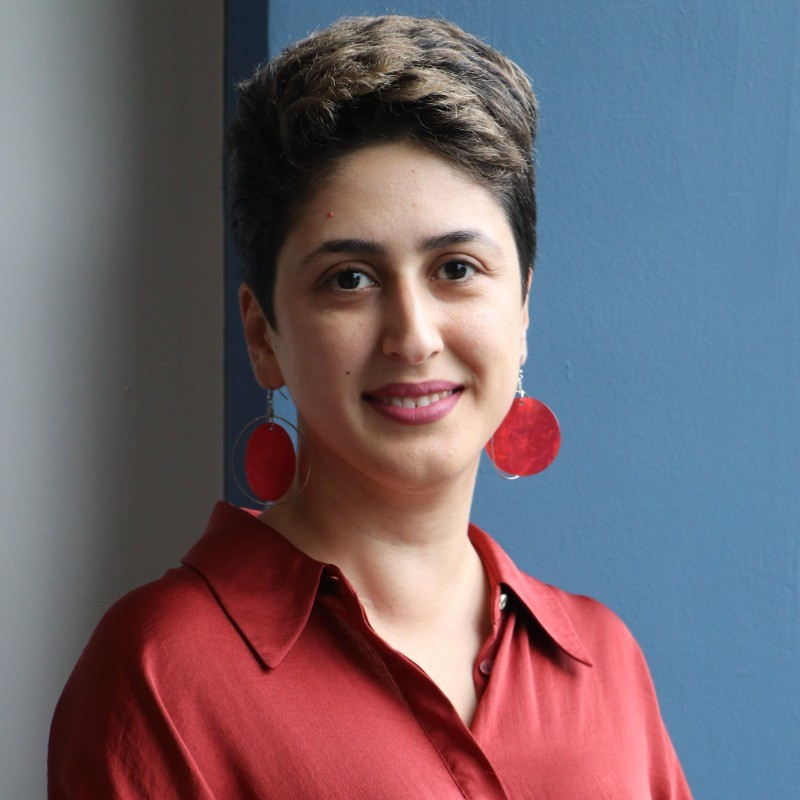
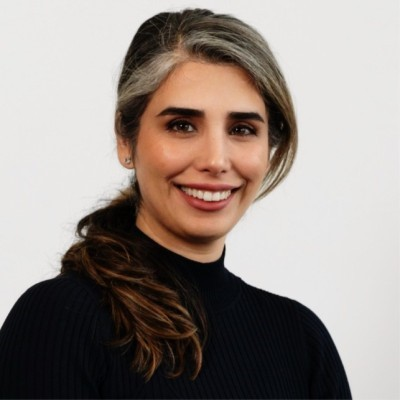
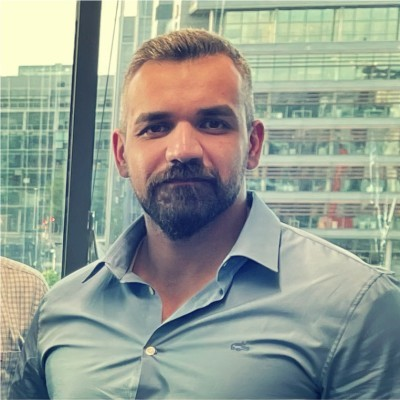
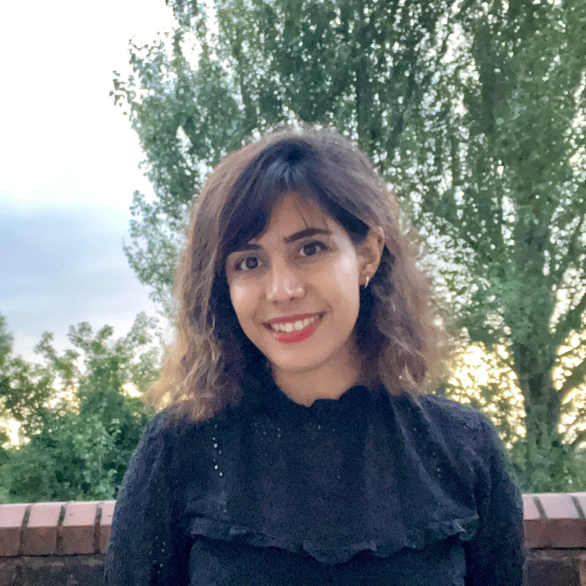

.png)
Iranian Democratic Diaspora
Network in Ireland
A female-led, multi-ethnic, non-partisan network bridging the voices of the Iranian people with Irish and European policymakers — championing freedom, dignity, and democratic change.
Who we are & what we do
We are the Iranian Democratic Diaspora Network in Ireland (IDDNI) — a multi-ethnic, non-partisan network of Iranians based primarily in Galway and Limerick, with members in Dublin and Cork. We bring together academics and professionals committed to supporting the Iranian people in their pursuit of a secular democratic future.
Our network reflects a broad range of political perspectives, lived experiences, and connections to Iran. We are female-led, with women forming the majority of our steering committee, and we place particular emphasis on civil liberties and women's rights.
Context
Iran is facing a deep and ongoing human rights crisis under an authoritarian regime that represses its own people. Women face systematic discrimination described by activists as gender apartheid.
The current situation is particularly urgent. Following nationwide protests, reports indicate a large-scale crackdown, including the massacre of protesters on 8–9 January 2026, alongside ongoing detentions and escalating executions. Despite these conditions, Iranians have consistently expressed a clear collective demand for freedom, dignity, and a secular democratic system.
ما شبکه دیاسپورای دموکراتیک ایرانیان در ایرلند (IDDNI) هستیم — یک شبکه چندقومیتی، غیرحزبی و زنمحور از ایرانیان مستقر در گالوی، لیمریک، دوبلین و کورک.
شبکه ما بازتابدهنده طیف گستردهای از دیدگاهها، تجربهها و پیشینههای موجود در میان ایرانیان خارج از کشور است. ما زنمحور هستیم و بر آزادیهای مدنی و حقوق زنان تاکید ویژه داریم.
زمینه و بستر
ایران با یک بحران عمیق و مداوم حقوق بشر روبروست. زنان با «آپارتاید جنسیتی» مواجهاند. کشتار معترضان در ژانویه ۲۰۲۶ و اعدامهای مداوم زندانیان سیاسی همچنان ادامه دارد.
Our Mission
Support the Iranian people in their pursuit of a secular democratic future through informed advocacy.
Policy Bridge
Connecting lived Iranian experiences to Irish and European policymakers with constructive recommendations.
Amplify Voices
Ensuring the democratic aspirations of Iranians are heard in media, civil society, and public discourse.
Human Rights
Grounded in human rights and dignity — opposing gender apartheid and all forms of repression.
Values that drive us
We are a non-partisan, values-driven network. Every action we take is rooted in these core principles.
Democracy
Championing a secular democratic future shaped by and for the Iranian people.
Women's Rights
A female-led network placing women's liberation and equality at the heart of our work.
Inclusion
Embracing Iran's full diversity of ethnicities, backgrounds, and political perspectives.
Evidence-Based
Careful, rigorous engagement — analysis grounded in facts and lived experience.
Non-Partisanship
Independent of all political parties — united solely around democratic values.
Global Engagement
Building coalitions with Irish, European, and international actors aligned with our values.
News & Press
14 April, 2026 — IDDNI
Iran's People Are Being Erased from Their Own Future — Europe Cannot Stay Silent
As ceasefire talks involving Iran continue behind closed doors, the Iranian people remain absent from the table where their future is being decided. IDDNI warns that international diplomacy is repeating a dangerous pattern.
در حالی که مذاکرات آتشبس با ایران پشت درهای بسته ادامه دارد، مردم ایران از میزی که آیندهشان در آن تعیین میشود غایباند.
18 April, 2026 — The Irish Examiner
Iranians in Ireland: ‘Iran has been there for 1,000 years. This will pass’
Spotlight feature on Iranians living in Ireland — including IDDNI founder Dr. Mahya Ostovar — sharing harrowing accounts of war, repression, and resilience amid ongoing conflict and internet blackouts in Iran.
گزارش ایریش اگزمینر از ایرانیان مقیم ایرلند، از جمله دکتر مهیا اُستوار، درباره جنگ، سرکوب و امید به آینده ایران.
Read ↗Media & Public Engagement
IDDNI members regularly contribute expert analysis, commentary, and interviews across Irish, European, and international media.
Available for Expert Commentary
IDDNI members are available to provide expert insights, commentary, and analysis on issues related to the Iranian diaspora, democratic aspirations in Iran, and human rights. We bring academic rigour and lived experience to every media engagement.
اعضای IDDNI برای ارائه دیدگاههای کارشناسی، تفسیر و تحلیل در مورد موضوعات مربوط به دیاسپورای ایرانی آماده همکاری با رسانهها هستند.
Steering Committee
Academics, professionals, and activists united by a shared commitment to a democratic and free Iran.

Dr. Mahya Ostovar
Founder
Bio: Dr Mahya Ostovar is an Assistant Professor at the University of Galway and an Iranian women's rights activist. Her research focuses on social movements and digital activism, with particular attention to resistance against compulsory hijab in Iran. She is a leading member of the Irish End Gender Apartheid Campaign and was a member of the Afghan and Iranian Women's Coalition, supported by the George W. Bush Institute and IRI's Women's Democracy Network.
بیوگرافی: دکتر محیا استوار فعال حقوق زنان و استادیار در دانشگاه گالوی است. پژوهشهای او بر جنبشهای اجتماعی و کنشگری دیجیتال متمرکز است. او یکی از اعضای اصلی «کمپین پایان دادن به آپارتاید جنسیتی در ایرلند» است.

Dr. Nasim Soleimanian
Co-Founder & Coordinator
Bio: Nasim is an Iranian woman in exile, a global commercial leader, and an advocate dedicated to transforming deep-tech innovation into real-world climate impact. She champions secular democracy, protects diaspora communities, and builds ethical, future-focused coalitions.
بیوگرافی: نسیم زنی ایرانی در تبعید، یک رهبر جهانی در حوزه تجارت، و حامیای متعهد است. او از دموکراسی سکولار حمایت میکند و ائتلافهایی اخلاقمحور ایجاد میکند.

Dr. Mehdi Yekrangi
Tech Lead
Bio: Mehdi is known for his clarity, conviction, and global perspective. Beyond his professional leadership, he is a committed voice on global issues, particularly the movement for freedom and democracy in Iran. Inspired by the Lion and Sun — a symbol of identity, unity, and resilience.
بیوگرافی: مهدی به خاطر شفافیت، قاطعیت و دیدگاه جهانیاش شناخته میشود. با الهام از «شیر و خورشید» — نمادی از هویت، وحدت و تابآوری.

Parand Shokrani
Content Creator
Bio: Parand is a PhD student in biomedical engineering at the University of Galway. She left Iran three years ago in search of freedom. Today, she uses her voice to speak out for her people in Iran, especially women who have endured decades of injustice — because every woman deserves the right to live freely, choose her own path, and be heard without fear.
بیوگرافی: پرند دانشجوی دکتری مهندسی پزشکی در دانشگاه گالوی است. او سه سال پیش در جستجوی آزادی ایران را ترک کرد. امروز از صدای خود برای دفاع از مردم ایران، به ویژه زنان، استفاده میکند.
Join the Network
If you are an Iranian living in Ireland who shares our values of democracy, human rights, and inclusivity — we want to hear from you. Your voice and experience are exactly what this network is built on.
Reach OutMake Your Voice Heard
Represent Iranian perspectives directly in Irish and European policy discussions.
Build Solidarity
Connect with a growing community of Iranians and allies across Ireland committed to change.
Amplify Iran's Story
Help shape media narratives and public understanding of the Iranian people's democratic struggle.
Open to All Iranians
We welcome all Iranians regardless of political background — united only by shared democratic values.
Get in Touch
Whether you're a policymaker, journalist, researcher, or community member — we want to hear from you.